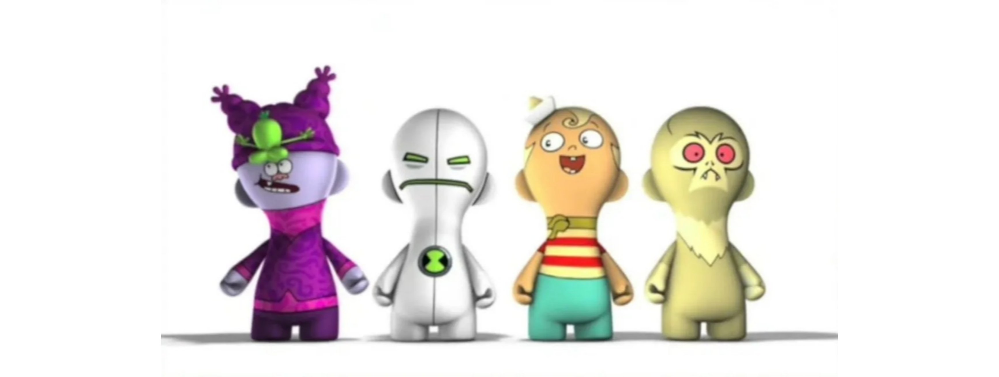

L'ère « City » a officiellement débuté en juin 2004, remplaçant « Powerhouse », et s'est achevée en mai 2007. Elle a été baptisée ainsi car elle privilégiait une identité visuelle plus urbaine, présentant les personnages de dessins animés dans une ville lors des jingles ou mini-clips promotionnels. Cartoon Network a également commencé à produire des courts métrages, reprenant le même concept de décor urbain, diffusés entre les épisodes de chaque grille de programmes, avec des crossovers entre les personnages, ce qui a donné à la chaîne une ambiance plus originale et divertissante.
C'était la première fois que CN entreprenait une refonte d'identité d'une telle ampleur, créant son propre univers pour ses personnages grâce à l'infographie 3D, tandis que les animations restaient en 2D. Malgré ce changement majeur, la proposition s'inscrivait parfaitement dans la devise de Cartoon Network : valoriser davantage les dessins animés. Créer une ville réaliste abritant les personnages les plus célèbres de la chaîne et les faire interagir était une stratégie très bien pensée pour rapprocher les dessins animés du public et attirer de nouveaux téléspectateurs.
Concernant la programmation, elle était initialement identique à celle de Powerhouse, puis s'est adaptée aux goûts de la nouvelle génération de téléspectateurs suite à la fin des dessins animés les plus marquants de l'époque précédente. Dans cette nouvelle phase, Cartoon Network s'est inspiré du succès de séries comme Foster, la maison des amis imaginaires pour poursuivre sa programmation. C'est également à cette période que la nécessité de divertir le public plus âgé s'est fait sentir. La chaîne a donc commencé à diffuser des dessins animés un peu moins enfantins, avec moins d'humour et des thèmes plus sérieux, tels que Generator Rex, Ben 10 : Alien Force et Titan Sym-Bionic.
CN City a connu plusieurs déclinaisons visuelles, comme celles de l'été 2007 et de l'automne, mais sans changement majeur de programmation ni de concept des dessins animés ; il s'agissait surtout d'une évolution esthétique saisonnière. Aux États-Unis, l'ère des figurines Noods a ensuite débuté, avec la création de figurines 3D moulées à l'identique des personnages de Cartoon Network. L'objectif était de souligner que l'identité de marque de Cartoon Network était désormais indissociable des dessins animés et de leurs personnages. Cette période a duré jusqu'en mai 2010.
La vidéo ci-dessous présent les principaux jingles publicitaires de l'époque de CN City.
Séries animées notables de l'époque : Ben 10, Mon compain de gym est un singe, Campez Lazlo!, Juniper Lee et Hi Hi Puffy AmiYumi.